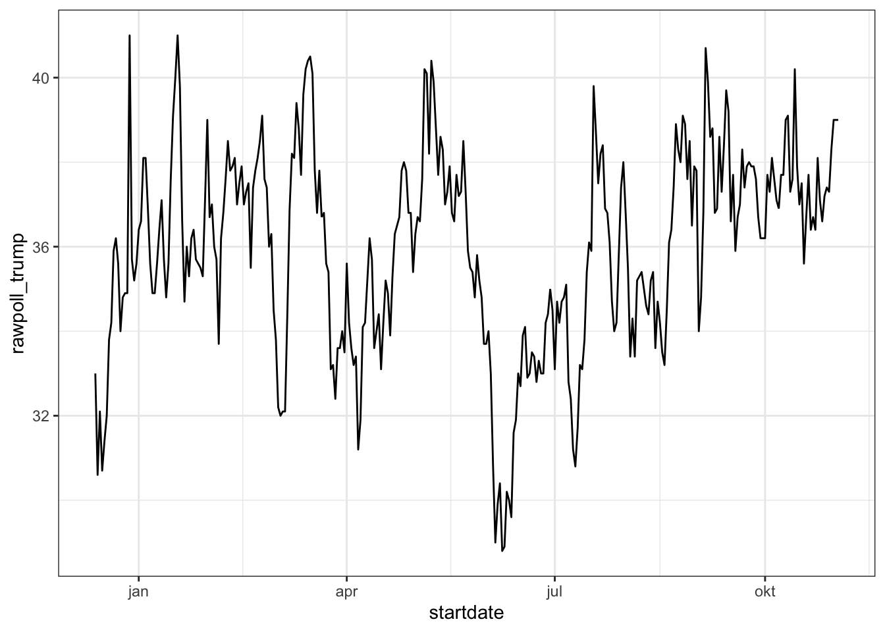
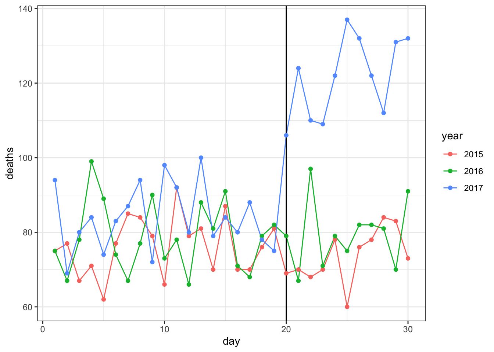

5 Section 4 Overview
In the Dates, Times, and Text Mining section, you will learn how to deal with dates and times in R and also how to generate numerical summaries from text data.
After completing this section, you will be able to:
- Handle dates and times in R.
- Use the lubridate package to parse dates and times in different formats.
- Generate numerical summaries from text data and apply data visualization and analysis techniques to those data.
5.1 Dates and Times
The textbook for this section is available here.
Key points
- Dates are a separate data type in R.The tidyverse includes functionality for dealing with dates through the lubridate package.
- Extract the year, month and day from a date object with the
year(),month()andday()functions. - Parsers convert strings into dates with the standard YYYY-MM-DD format (ISO 8601 format). Use the parser with the name corresponding to the string format of year, month and day (
ymd(),ydm(),myd(),mdy(),dmy(),dym()). - Get the current time with the
Sys.time()function. Use thenow()function instead to specify a time zone. - You can extract values from time objects with the
hour(),minute()andsecond()functions. - Parsers convert strings into times (for example,
hms()). Parsers can also create combined date-time objects (for example,mdy_hms()).
Code
# inspect the startdate column of 2016 polls data, a Date type
data("polls_us_election_2016")
polls_us_election_2016$startdate %>% head## [1] "2016-11-03" "2016-11-01" "2016-11-02" "2016-11-04" "2016-11-03" "2016-11-03"class(polls_us_election_2016$startdate)## [1] "Date"as.numeric(polls_us_election_2016$startdate) %>% head## [1] 17108 17106 17107 17109 17108 17108# ggplot is aware of dates
polls_us_election_2016 %>% filter(pollster == "Ipsos" & state =="U.S.") %>%
ggplot(aes(startdate, rawpoll_trump)) +
geom_line()
# lubridate: the tidyverse date package
if(!require(lubridate)) install.packages("lubridate")## Loading required package: lubridate##
## Attaching package: 'lubridate'## The following objects are masked from 'package:base':
##
## date, intersect, setdiff, unionlibrary(lubridate)
# select some random dates from polls
set.seed(2)
dates <- sample(polls_us_election_2016$startdate, 10) %>% sort
dates## [1] "2016-01-19" "2016-08-06" "2016-08-26" "2016-09-09" "2016-09-14" "2016-09-16" "2016-09-29" "2016-10-04" "2016-10-12" "2016-10-23"# extract month, day, year from date strings
data.frame(date = dates,
month = month(dates),
day = day(dates),
year = year(dates))## date month day year
## 1 2016-01-19 1 19 2016
## 2 2016-08-06 8 6 2016
## 3 2016-08-26 8 26 2016
## 4 2016-09-09 9 9 2016
## 5 2016-09-14 9 14 2016
## 6 2016-09-16 9 16 2016
## 7 2016-09-29 9 29 2016
## 8 2016-10-04 10 4 2016
## 9 2016-10-12 10 12 2016
## 10 2016-10-23 10 23 2016month(dates, label = TRUE) # extract month label## [1] jan aug aug sep sep sep sep okt okt okt
## Levels: jan < feb < mrt < apr < mei < jun < jul < aug < sep < okt < nov < dec# ymd works on mixed date styles
x <- c(20090101, "2009-01-02", "2009 01 03", "2009-1-4",
"2009-1, 5", "Created on 2009 1 6", "200901 !!! 07")
ymd(x)## [1] "2009-01-01" "2009-01-02" "2009-01-03" "2009-01-04" "2009-01-05" "2009-01-06" "2009-01-07"# different parsers extract year, month and day in different orders
x <- "09/01/02"
ymd(x)## [1] "2009-01-02"mdy(x)## [1] "2002-09-01"ydm(x)## [1] "2009-02-01"myd(x)## [1] "2001-09-02"dmy(x)## [1] "2002-01-09"dym(x)## [1] "2001-02-09"now() # current time in your time zone## [1] "2020-09-11 17:38:02 CEST"now("GMT") # current time in GMT## [1] "2020-09-11 15:38:02 GMT"now() %>% hour() # current hour## [1] 17now() %>% minute() # current minute## [1] 38now() %>% second() # current second## [1] 2.700909# parse time
x <- c("12:34:56")
hms(x)## [1] "12H 34M 56S"#parse datetime
x <- "Nov/2/2012 12:34:56"
mdy_hms(x)## [1] "2012-11-02 12:34:56 UTC"5.2 Text mining
The textbook for this section is available here.
Key points
- The tidytext package helps us convert free form text into a tidy table.
- Use
unnest_tokens()to extract individual words and other meaningful chunks of text. - Sentiment analysis assigns emotions or a positive/negative score to tokens. You can extract sentiments using
get_sentiments(). Common lexicons for sentiment analysis are “bing”, “afinn”, “nrc” and “loughran”.
With the exception of labels used to represent categorical data, we have focused on numerical data, but in many applications data starts as text. Well known examples are spam filtering, cyber-crime prevention, counter-terrorism and sentiment analysis.
In all these examples, the raw data is composed of free form texts. Our task is to extract insights from these data. In this section, we learn how to generate useful numerical summaries from text data to which we can apply some of the powerful data visualization and analysis techniques we have learned.
Case study: Trump Tweets
5.3 Assessment Part 1 - Dates, Times, and Text Mining
options(digits = 3) # 3 significant digits- Which of the following is the standard ISO 8601 format for dates?
- A. MM-DD-YY
- B. YYYY-MM-DD
- C. YYYYMMDD
- D. YY-MM-DD
- Which of the following commands could convert this string into the correct date format?
dates <- c("09-01-02", "01-12-07", "02-03-04")-
A.
ymd(dates) -
B.
mdy(dates) -
C.
dmy(dates) - D. It is impossible to know which format is correct without additional information.
- Load the
brexit_pollsdata frame from dslabs:
data(brexit_polls)How many polls had a start date (startdate) in April (month number 4)?
sum(month(brexit_polls$startdate) == 4)## [1] 25Use the round_date() function on the enddate column with the argument unit="week". How many polls ended the week of 2016-06-12?
Read the documentation to learn more about round_date().
sum(round_date(brexit_polls$enddate, unit = "week") == "2016-06-12")## [1] 13- Use the
weekdays()function from lubridate to determine the weekday on which each poll ended (enddate).
On which weekday did the greatest number of polls end?
table(weekdays(brexit_polls$enddate))##
## dinsdag donderdag maandag vrijdag woensdag zaterdag zondag
## 23 17 20 14 12 4 37- A. Monday
- B. Tuesday
- C. Wednesday
- D. Thursday
- E. Friday
- F. Saturday
- G. Sunday
max(weekdays(brexit_polls$enddate))## [1] "zondag"- Load the
movielensdata frame from dslabs.
data(movielens)This data frame contains a set of about 100,000 movie reviews. The timestamp column contains the review date as the number of seconds since 1970-01-01 (epoch time).
Convert the timestamp column to dates using the lubridate as_datetime() function.
Which year had the most movie reviews?
dates <- as_datetime(movielens$timestamp)
reviews_by_year <- table(year(dates))
names(which.max(reviews_by_year))## [1] "2000"Which hour of the day had the most movie reviews?
reviews_by_hour <- table(hour(dates))
names(which.max(reviews_by_hour))## [1] "20"5.4 Assessment Part 2 - Dates, Times, and Text Mining
- Project Gutenberg is a digital archive of public domain books. The R package gutenbergr facilitates the importation of these texts into R. We will combine this with the tidyverse and tidytext libraries to practice text mining.
Use these libraries and options:
if(!require(gutenbergr)) install.packages("gutenbergr")## Loading required package: gutenbergrif(!require(tidytext)) install.packages("tidytext")## Loading required package: tidytextlibrary(gutenbergr)
library(tidytext)You can see the books and documents available in gutenbergr like this:
gutenberg_metadata## # A tibble: 51,997 x 8
## gutenberg_id title author gutenberg_author_… language gutenberg_bookshelf rights has_text
## <int> <chr> <chr> <int> <chr> <chr> <chr> <lgl>
## 1 0 <NA> <NA> NA en <NA> Public domain… TRUE
## 2 1 "The Declaration of Independence of the United States… Jefferson, Thomas 1638 en United States Law/American Revolutiona… Public domain… TRUE
## 3 2 "The United States Bill of Rights\r\nThe Ten Original… United States 1 en American Revolutionary War/Politics/Un… Public domain… TRUE
## 4 3 "John F. Kennedy's Inaugural Address" Kennedy, John F. (… 1666 en <NA> Public domain… TRUE
## 5 4 "Lincoln's Gettysburg Address\r\nGiven November 19, 1… Lincoln, Abraham 3 en US Civil War Public domain… TRUE
## 6 5 "The United States Constitution" United States 1 en American Revolutionary War/Politics/Un… Public domain… TRUE
## 7 6 "Give Me Liberty or Give Me Death" Henry, Patrick 4 en American Revolutionary War Public domain… TRUE
## 8 7 "The Mayflower Compact" <NA> NA en <NA> Public domain… TRUE
## 9 8 "Abraham Lincoln's Second Inaugural Address" Lincoln, Abraham 3 en US Civil War Public domain… TRUE
## 10 9 "Abraham Lincoln's First Inaugural Address" Lincoln, Abraham 3 en US Civil War Public domain… TRUE
## # … with 51,987 more rowsUse str_detect() to find the ID of the novel Pride and Prejudice.
How many different ID numbers are returned?
gutenberg_metadata %>%
filter(str_detect(title, "Pride and Prejudice"))## # A tibble: 6 x 8
## gutenberg_id title author gutenberg_author_id language gutenberg_bookshelf rights has_text
## <int> <chr> <chr> <int> <chr> <chr> <chr> <lgl>
## 1 1342 Pride and Prejudice Austen, Jane 68 en Best Books Ever Listings/Harvard Clas… Public domain in the U… TRUE
## 2 20686 Pride and Prejudice Austen, Jane 68 en Harvard Classics/Best Books Ever List… Public domain in the U… FALSE
## 3 20687 Pride and Prejudice Austen, Jane 68 en Harvard Classics/Best Books Ever List… Public domain in the U… FALSE
## 4 26301 Pride and Prejudice Austen, Jane 68 en Best Books Ever Listings Public domain in the U… FALSE
## 5 37431 Pride and Prejudice, a play founded on Jane Austen's… <NA> NA en <NA> Public domain in the U… TRUE
## 6 42671 Pride and Prejudice Austen, Jane 68 en Best Books Ever Listings Public domain in the U… TRUE- Notice that there are several versions of the book. The
gutenberg_works()function filters this table to remove replicates and include only English language works. Use this function to find the ID for Pride and Prejudice.
What is the correct ID number?
Read the gutenberg_works() documentation to learn how to use the function.
gutenberg_works(title == "Pride and Prejudice")$gutenberg_id## Warning: `filter_()` is deprecated as of dplyr 0.7.0.
## Please use `filter()` instead.
## See vignette('programming') for more help
## This warning is displayed once every 8 hours.
## Call `lifecycle::last_warnings()` to see where this warning was generated.## Warning: `distinct_()` is deprecated as of dplyr 0.7.0.
## Please use `distinct()` instead.
## See vignette('programming') for more help
## This warning is displayed once every 8 hours.
## Call `lifecycle::last_warnings()` to see where this warning was generated.## [1] 1342- Use the
gutenberg_download()function to download the text for Pride and Prejudice. Use the tidytext package to create a tidy table with all the words in the text. Save this object as `words.
How many words are present in the book?
book <- gutenberg_download(1342)## Determining mirror for Project Gutenberg from http://www.gutenberg.org/robot/harvest## Using mirror http://aleph.gutenberg.orgwords <- book %>%
unnest_tokens(word, text)
nrow(words)## [1] 122204- Remove stop words from the
wordsobject. Recall that stop words are defined in thestop_wordsdata frame from the tidytext package.
How many words remain?
words <- words %>% anti_join(stop_words) ## Joining, by = "word"nrow(words) ## [1] 37246- After removing stop words, detect and then filter out any token that contains a digit from `
words.
How many words remain?
words <- words %>%
filter(!str_detect(word, "\\d"))
nrow(words)## [1] 37180- Analyze the most frequent words in the novel after removing stop words and tokens with digits.
How many words appear more than 100 times in the book?
words %>%
count(word) %>%
filter(n > 100) %>%
nrow()## [1] 23What is the most common word in the book?
words %>%
count(word) %>%
top_n(1, n) %>%
pull(word)## [1] "elizabeth"How many times does that most common word appear?
words %>%
count(word) %>%
top_n(1, n) %>%
pull(n)## [1] 597- Define the afinn lexicon.
afinn <- get_sentiments("afinn")Note that this command will trigger a question in the R Console asking if you want to download the AFINN lexicon. Press 1 to select “Yes” (if using RStudio, enter this in the Console tab).
Use this afinn lexicon to assign sentiment values to words. Keep only words that are present in both words and the afinn lexicon. Save this data frame as afinn_sentiments.
How many elements of words have sentiments in the afinn lexicon?
afinn_sentiments <- inner_join(afinn, words)## Joining, by = "word"nrow(afinn_sentiments)## [1] 6065What proportion of words in afinn_sentiments have a positive value?
mean(afinn_sentiments$value > 0)## [1] 0.563How many elements of afinn_sentiments have a value of 4?
sum(afinn_sentiments$value == 4)## [1] 515.5 Final: Comprehensive Assessment
5.5.1 Comprehensive Assessment: Puerto Rico Hurricane Mortality
5.5.2 Project Introduction
On September 20, 2017, Hurricane Maria made landfall on Puerto Rico. It was the worst natural disaster on record in Puerto Rico and the deadliest Atlantic hurricane since 2004. However, Puerto Rico’s official death statistics only tallied 64 deaths caused directly by the hurricane (due to structural collapse, debris, floods and drownings), an undercount that slowed disaster recovery funding. The majority of the deaths resulted from infrastructure damage that made it difficult to access resources like clean food, water, power, healthcare and communications in the months after the disaster, and although these deaths were due to effects of the hurricane, they were not initially counted.
In order to correct the misconception that few lives were lost in Hurricane Maria, statisticians analyzed how death rates in Puerto Rico changed after the hurricane and estimated the excess number of deaths likely caused by the storm. This analysis suggested that the actual number of deaths in Puerto Rico was 2,975 (95% CI: 2,658-3,290) over the 4 months following the hurricane, much higher than the original count.
We will use your new data wrangling skills to extract actual daily mortality data from Puerto Rico and investigate whether the Hurricane Maria had an immediate effect on daily mortality compared to unaffected days in September 2015-2017.
options(digits = 3) # report 3 significant digits5.5.3 Puerto Rico Hurricane Mortality - Part 1
- In the
extdatadirectory of the dslabs package, you will find a PDF file containing daily mortality data for Puerto Rico from Jan 1, 2015 to May 31, 2018. You can find the file like this:
fn <- system.file("extdata", "RD-Mortality-Report_2015-18-180531.pdf", package="dslabs")Find and open the file or open it directly from RStudio. On a Mac, you can type:
system2("open", args = fn)and on Windows, you can type:
system("cmd.exe", input = paste("start", fn))Which of the following best describes this file?
- A. It is a table. Extracting the data will be easy.
- B. It is a report written in prose. Extracting the data will be impossible.
- C. It is a report combining graphs and tables. Extracting the data seems possible.
- D. It shows graphs of the data. Extracting the data will be difficult.
- We are going to create a tidy dataset with each row representing one observation. The variables in this dataset will be year, month, day and deaths.
Use the pdftools package to read in fn using the pdf_text function. Store the results in an object called txt.
txt <- pdf_text(fn)
class(txt)## [1] "character"str(txt)## chr [1:12] "6/4/2018 Departamento de Salud - Registro Demográfico - División de Calidad y Estadística"| __truncated__ ...length(txt)## [1] 12Describe what you see in txt.
- A. A table with the mortality data.
- B. A character string of length 12. Each entry represents the text in each page. The mortality data is in there somewhere.
- C. A character string with one entry containing all the information in the PDF file.
- D. An html document.
- Extract the ninth page of the PDF file from the object
txt, then use thestr_splitfunction from the stringr package so that you have each line in a different entry. The new line character is\n. Call this string vectorx.
Look at x. What best describes what you see?
What kind of object is x?
How many entries does x have?
x <- str_split(txt[9], "\n")
class(x)## [1] "list"length(x)## [1] 1- A. It is an empty string.
- B. I can see the figure shown in page 1.
- C. It is a tidy table.
- D. I can see the table! But there is a bunch of other stuff we need to get rid of.
- Define
sto be the first entry of thexobject.
What kind of object is s?
How many entries does s have?
s <- x[[1]]
class(s)## [1] "character"length(s)## [1] 40- When inspecting the string we obtained above, we see a common problem: white space before and after the other characters. Trimming is a common first step in string processing. These extra spaces will eventually make splitting the strings hard so we start by removing them.
We learned about the command str_trimthat removes spaces at the start or end of the strings. Use this function to trim s and assign the result to s again.
After trimming, what single character is the last character of element 1 of s?
s <- str_trim(s)
s[1] # print string, visually inspect last character## [1] "6/4/2018 Departamento de Salud - Registro Demográfico - División de Calidad y Estadísticas Vitales"- We want to extract the numbers from the strings stored in
s. However, there are a lot of non-numeric characters that will get in the way. We can remove these, but before doing this we want to preserve the string with the column header, which includes the month abbreviation.
Use the str_which function to find the row with the header. Save this result to header_index.
Hint: find the first string that matches the pattern "2015" using the str_which function.
What is the value of header_index?
header_index <- str_which(s, pattern="2015")[1]
header_index## [1] 2- We want to extract two objects from the header row:
monthwill store the month andheaderwill store the column names.
Save the content of the header row into an object calledheader, then usestr_splitto help define the two objects we need.
What is the value of month? Use header_index to extract the row. The separator here is one or more spaces. Also, consider using the simplify argument.
What is the third value in header?
tmp <- str_split(s[header_index], pattern="\\s+", simplify=TRUE)
month <- tmp[1]
header <- tmp[-1]
month## [1] "SEP"header[3]## [1] "2017"5.5.4 Puerto Rico Hurricane Mortality - Part 2
- Notice that towards the end of the page defined by
syou see a “Total” row followed by rows with other summary statistics. Create an object calledtail_indexwith the index of the “Total” entry.
What is the value of tail_index?
tail_index <- str_which(s, "Total")
tail_index## [1] 35- Because our PDF page includes graphs with numbers, some of our rows have just one number (from the y-axis of the plot). Use the
str_countfunction to create an objectnwith the count of numbers in each row.
How many rows have a single number in them? You can write a regex for a number like this \\d+.
n <- str_count(s, "\\d+")
sum(n == 1)## [1] 2- We are now ready to remove entries from rows that we know we don’t need. The entry
header_indexand everything before it should be removed. Entries for whichnis 1 should also be removed, and the entrytail_indexand everything that comes after it should be removed as well.
How many entries remain in s?
out <- c(1:header_index, which(n==1), tail_index:length(s))
s <- s[-out]
length(s)## [1] 30- Now we are ready to remove all text that is not a digit or space. Do this using regular expressions (regex) and the
str_remove_allfunction. In regex, using the^inside the square brackets[]means not, like the!means not in!=. To define the regex pattern to catch all non-numbers, you can type[^\\d]. But remember you also want to keep spaces.
Which of these commands produces the correct output?
- A.
s <- str_remove_all(s, "[^\\d]")- B.
s <- str_remove_all(s, "[\\d\\s]")- C.
s <- str_remove_all(s, "[^\\d\\s]")- D.
s <- str_remove_all(s, "[\\d]")- Use the
str_split_fixedfunction to convertsinto a data matrix with just the day and death count data:
s <- str_split_fixed(s, "\\s+", n = 6)[,1:5]Now you are almost ready to finish. Add column names to the matrix: the first column should be day and the next columns should be the header. Convert all values to numeric. Also, add a column with the month. Call the resulting object tab.
What was the mean number of deaths per day in September 2015?
tab <- s %>%
as_data_frame() %>%
setNames(c("day", header)) %>%
mutate_all(as.numeric)
mean(tab$"2015")## [1] 75.3What is the mean number of deaths per day in September 2016?
mean(tab$`2016`)## [1] 78.9Hurricane Maria hit Puerto Rico on September 20, 2017. What was the mean number of deaths per day from September 1-19, 2017, before the hurricane hit?
mean(tab$`2017`[1:19])## [1] 83.7What was the mean number of deaths per day from September 20-30, 2017, after the hurricane hit?
mean(tab$`2017`[20:30])## [1] 122- Finish it up by changing
tabto a tidy format, starting from this code outline:
tab <- tab %>% ________(year, deaths, -day) %>%
mutate(deaths = as.numeric(deaths))
tabWhat code fills the blank to generate a data frame with columns named “day”, “year” and “deaths”?
tab <- tab %>% gather(year, deaths, -day) %>%
mutate(deaths = as.numeric(deaths))
tab## # A tibble: 120 x 3
## day year deaths
## <dbl> <chr> <dbl>
## 1 1 2015 75
## 2 2 2015 77
## 3 3 2015 67
## 4 4 2015 71
## 5 5 2015 62
## 6 6 2015 77
## 7 7 2015 85
## 8 8 2015 84
## 9 9 2015 79
## 10 10 2015 66
## # … with 110 more rows- A. separate
- B. unite
- C. gather
- D. spread
- Make a plot of deaths versus day with color to denote year. Exclude 2018 since we have no data. Add a vertical line at day 20, the day that Hurricane Maria hit in 2017.
tab %>% filter(year < 2018) %>%
ggplot(aes(day, deaths, color = year)) +
geom_line() +
geom_vline(xintercept = 20) +
geom_point()
Which of the following are TRUE?
- A. September 2015 and 2016 deaths by day are roughly equal to each other.
- B. The day with the most deaths was the day of the hurricane: September 20, 2017.
- C. After the hurricane in September 2017, there were over 100 deaths per day every day for the rest of the month.
- D. No days before September 20, 2017 have over 100 deaths per day.